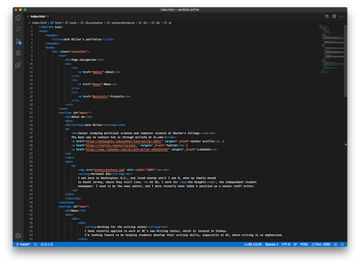

Things to know
-
This project was assigned as the first homework for Web Application Development, which is a 2000-level CS elective.
-
I worked on this project alone and had to learn HTML for the first time to do so.
-
The website, published to GitHub, is the only material in this project, although it contains plenty of pictures and information from other classes' projects.

How it works
I have never used HTMl before, so this process involved some trial and error. I had to make a main page as well as three sub-page with information about projects I have worked on. I also had to implement some personal information, which was honestly a bit of a stretch because I don't have that much interesting happening right now.
I was hoping to include videos for some of these projects, but I was unable to get those to embed correctly after multiple attempts. This project also contains a lot of links to sections and other pages, which was useful and suprinsingly simple. Overall, I didn't think HTML would be this easy to pick up.